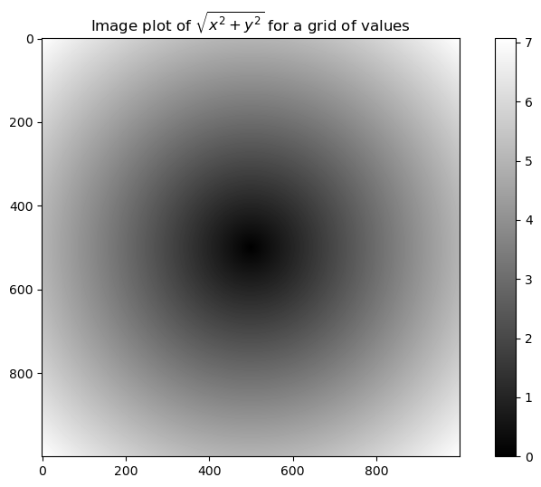
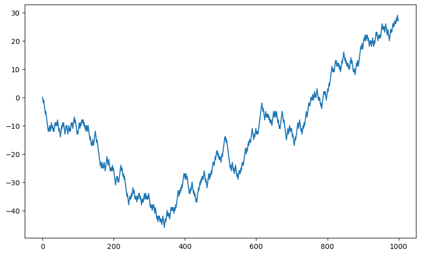

Jupyter에서 실행하기 Jupyter에서 실행하기
|
Numpy Basic
1 Advanced Python CH4 - Numpy Basic
2 Array & Vectorized Computation
랜덤 시드 : 숫자 지정시 동일 난수 생성
import numpy as np
np.random.seed(12345)그림 크기 지정
import matplotlib.pyplot as plt
plt.rc('figure', figsize = (10,6))Numpy 배열 숫자들을 소수점 이하 4자리까지 표시
np.set_printoptions(precision=4, suppress=True)0부터 999999까지의 숫자로 이루어진 NumPy 배열
my_arr = np.arange(1000000)
my_arrarray([ 0, 1, 2, ..., 999997, 999998, 999999])0부터 999999까지의 숫자로 이루어진 리스트를 생성
my_list = list(range(1000000))Numpy배열이 list형태보다 계산이 더 빠름
%time for _ in range(10): my_arr2 = my_arr*2
%time for _ in range(10): my_list2 = [x*2 for x in my_list]CPU times: total: 31.2 ms
Wall time: 20.9 ms
CPU times: total: 1.03 s
Wall time: 1.02 s3 Numpy ndarray
2행 3열의 랜덤난수 생성 (randn : 표준정규분포)
data = np.random.randn(2,3)
dataarray([[-0.2047, 0.4789, -0.5194],
[-0.5557, 1.9658, 1.3934]])data *10array([[-2.0471, 4.7894, -5.1944],
[-5.5573, 19.6578, 13.9341]])data + dataarray([[-0.4094, 0.9579, -1.0389],
[-1.1115, 3.9316, 2.7868]])data.shape(2, 3)data.dtypedtype('float64')4 Creating ndarrays
list배열을 Numpy배열로 변환
data1 = [6, 7.5, 8, 0, 1]
arr1 = np.array(data1)
arr1array([6. , 7.5, 8. , 0. , 1. ])data2 = [[1,2,3,4], [5,6,7,8]]
arr2 = np.array(data2)
arr2array([[1, 2, 3, 4],
[5, 6, 7, 8]])차원 수
arr1.ndim, arr2.ndim(1, 2)arr2.shape(2, 4)arr1.dtype, arr2.dtype(dtype('float64'), dtype('int32'))np.zeros(10)
array([0., 0., 0., 0., 0., 0., 0., 0., 0., 0.])np.zeros((3,6))array([[0., 0., 0., 0., 0., 0.],
[0., 0., 0., 0., 0., 0.],
[0., 0., 0., 0., 0., 0.]])np.empty((2,3,2))array([[[1.1239e-311, 3.1620e-322],
[0.0000e+000, 0.0000e+000],
[1.7801e-306, 2.8808e+180]],
[[2.6303e-052, 6.5288e-038],
[1.5330e-075, 4.2843e-037],
[2.9306e-057, 2.6797e-032]]])np.arange(15)array([ 0, 1, 2, 3, 4, 5, 6, 7, 8, 9, 10, 11, 12, 13, 14])5 Data Types for ndarrays
데이터 타입 지정
arr1 = np.array([1,2,3], dtype=np.float64)
arr2 = np.array([1,2,3], dtype=np.int32)
arr1.dtype, arr2.dtype(dtype('float64'), dtype('int32'))arr = np.array([1,2,3,4,5])
arr.dtypedtype('int32')astype : 타입 변경 함수
float_arr = arr.astype(np.float64)
float_arr.dtypedtype('float64')arr = np.array([3.7, -1.2, -2.6, 0.5, 12.9, 10.1])
arrarray([ 3.7, -1.2, -2.6, 0.5, 12.9, 10.1])arr.astype(np.int32)array([ 3, -1, -2, 0, 12, 10])바이트(b) 문자열
numeric_strings = np.array(['1.25', '-9.6', '42'], dtype=np.string_)
numeric_stringsarray([b'1.25', b'-9.6', b'42'], dtype='|S4')numeric_strings.astype(float)array([ 1.25, -9.6 , 42. ])int_array = np.arange(10)
calibers = np.array([.22, .270, .357, .380, .44, .50], dtype=np.float64)
int_array.astype(calibers.dtype)array([0., 1., 2., 3., 4., 5., 6., 7., 8., 9.])u4 : 부호없는 4바이트 정수 데이터타입
empty_unit32 = np.empty(8, dtype='u4')
empty_unit32array([ 0, 1075314688, 0, 1075707904, 0,
1075838976, 0, 1072693248], dtype=uint32)6 Arithmetic with Numpy Arrays
arr = np.array([[1., 2., 3.], [4., 5., 6.]])
arrarray([[1., 2., 3.],
[4., 5., 6.]])arr*arrarray([[ 1., 4., 9.],
[16., 25., 36.]])arr-arrarray([[0., 0., 0.],
[0., 0., 0.]])1/arrarray([[1. , 0.5 , 0.3333],
[0.25 , 0.2 , 0.1667]])arr**0.5array([[1. , 1.4142, 1.7321],
[2. , 2.2361, 2.4495]])arr2 = np.array([[0., 4., 1.], [7., 2., 12.]])
arr2array([[ 0., 4., 1.],
[ 7., 2., 12.]])arr2 > arrarray([[False, True, False],
[ True, False, True]])7 Basic Indexing & Slicing
arr = np.arange(10)
arrarray([0, 1, 2, 3, 4, 5, 6, 7, 8, 9])arr[5]5arr[5:8]array([5, 6, 7])arr[5:8] = 12
arrarray([ 0, 1, 2, 3, 4, 12, 12, 12, 8, 9])arr_slice = arr[5:8]
arr_slicearray([12, 12, 12])arr_slice[1] = 12345
arr_slicearray([ 12, 12345, 12])기존 numpy배열 (arr)에도 반영
arrarray([ 0, 1, 2, 3, 4, 12, 12345, 12, 8,
9])[:] = 전체 슬라이스 (배열의 모든 요소)
arr_slice[:] = 64
arr_slicearray([64, 64, 64])arrarray([ 0, 1, 2, 3, 4, 64, 64, 64, 8, 9])arr2d = np.array([[1,2,3], [4,5,6], [7,8,9]])
arr2darray([[1, 2, 3],
[4, 5, 6],
[7, 8, 9]])arr2d[2]array([7, 8, 9])arr2d[0][2]3arr2d[0,2]3arr3d = np.array([[[1,2,3], [4,5,6]], [[7,8,9], [10,11,12]]])
arr3darray([[[ 1, 2, 3],
[ 4, 5, 6]],
[[ 7, 8, 9],
[10, 11, 12]]])arr3d[0]array([[1, 2, 3],
[4, 5, 6]])copy 사용시 기존 배열에 영향 X
old_values = arr3d[0].copy()
old_valuesarray([[1, 2, 3],
[4, 5, 6]])arr3d[0] = 42
arr3darray([[[42, 42, 42],
[42, 42, 42]],
[[ 7, 8, 9],
[10, 11, 12]]])arr3d[0] = old_values
arr3darray([[[ 1, 2, 3],
[ 4, 5, 6]],
[[ 7, 8, 9],
[10, 11, 12]]])arr3d[1,0]array([7, 8, 9])x = arr3d[1]
xarray([[ 7, 8, 9],
[10, 11, 12]])x[0]array([7, 8, 9])7.1 Quiz 1
arr3d를 이용하여 array([[ 8, 10, 12], [14, 16, 18]]) 만들기
arr3darray([[[ 1, 2, 3],
[ 4, 5, 6]],
[[ 7, 8, 9],
[10, 11, 12]]])arr3d[0] + arr3d[1]array([[ 8, 10, 12],
[14, 16, 18]])axis : 축 지정
arr3d.sum(axis=0)array([[ 8, 10, 12],
[14, 16, 18]])7.2 Quiz 2
1차원으로 변경하시오
arr3d.sum(axis=0).reshape(-1)array([ 8, 10, 12, 14, 16, 18])7.3 Quiz 3
shape(2,2)인 [1,2,4,5]를 추출해보시오
arr3d[0,:2,:2]array([[1, 2],
[4, 5]])arr3d[0,:,:2]array([[1, 2],
[4, 5]])7.4 Quiz 4
[[0,7], [10,15]] 에서 [10, 22]를 출력하시오
arr4 = np.array([[0,7], [10,15]])
arr4array([[ 0, 7],
[10, 15]])arr4.sum(axis=0)array([10, 22])7.5 Indexing with Slices
arrarray([ 0, 1, 2, 3, 4, 64, 64, 64, 8, 9])arr[1:6]array([ 1, 2, 3, 4, 64])arr2darray([[1, 2, 3],
[4, 5, 6],
[7, 8, 9]])arr2d[:2]array([[1, 2, 3],
[4, 5, 6]])arr2d[:2, 1:]array([[2, 3],
[5, 6]])arr2d[1, :2]array([4, 5])arr2d[:2,2]array([3, 6])arr2d[:, :1]array([[1],
[4],
[7]])arr2d[:2, 1:] = 0
arr2darray([[1, 0, 0],
[4, 0, 0],
[7, 8, 9]])7.6 Boolean Indexing
names = np.array(['Bob','Joe','Will', 'Bob', 'Will','Joe','Joe'])
data = np.random.randn(7,4)
names, data(array(['Bob', 'Joe', 'Will', 'Bob', 'Will', 'Joe', 'Joe'], dtype='<U4'),
array([[ 0.0929, 0.2817, 0.769 , 1.2464],
[ 1.0072, -1.2962, 0.275 , 0.2289],
[ 1.3529, 0.8864, -2.0016, -0.3718],
[ 1.669 , -0.4386, -0.5397, 0.477 ],
[ 3.2489, -1.0212, -0.5771, 0.1241],
[ 0.3026, 0.5238, 0.0009, 1.3438],
[-0.7135, -0.8312, -2.3702, -1.8608]]))names == 'Bob'array([ True, False, False, True, False, False, False])data[names == 'Bob']array([[ 0.0929, 0.2817, 0.769 , 1.2464],
[ 1.669 , -0.4386, -0.5397, 0.477 ]])data[names == 'Bob', 2:]array([[ 0.769 , 1.2464],
[-0.5397, 0.477 ]])data[names == 'Bob', 3]array([1.2464, 0.477 ])names != 'Bob'array([False, True, True, False, True, True, True])~ : 불리언 배열의 각 요소를 논리적으로 반전 (T→F, T→F)
data[~(names == 'Bob')]array([[ 1.0072, -1.2962, 0.275 , 0.2289],
[ 1.3529, 0.8864, -2.0016, -0.3718],
[ 3.2489, -1.0212, -0.5771, 0.1241],
[ 0.3026, 0.5238, 0.0009, 1.3438],
[-0.7135, -0.8312, -2.3702, -1.8608]])cond = names == 'Bob'
data[~cond]array([[ 1.0072, -1.2962, 0.275 , 0.2289],
[ 1.3529, 0.8864, -2.0016, -0.3718],
[ 3.2489, -1.0212, -0.5771, 0.1241],
[ 0.3026, 0.5238, 0.0009, 1.3438],
[-0.7135, -0.8312, -2.3702, -1.8608]])mask = (names == 'Bob') | (names == 'Will')
maskarray([ True, False, True, True, True, False, False])data[mask]array([[ 0.0929, 0.2817, 0.769 , 1.2464],
[ 1.3529, 0.8864, -2.0016, -0.3718],
[ 1.669 , -0.4386, -0.5397, 0.477 ],
[ 3.2489, -1.0212, -0.5771, 0.1241]])data[data < 0] = 0
dataarray([[0.0929, 0.2817, 0.769 , 1.2464],
[1.0072, 0. , 0.275 , 0.2289],
[1.3529, 0.8864, 0. , 0. ],
[1.669 , 0. , 0. , 0.477 ],
[3.2489, 0. , 0. , 0.1241],
[0.3026, 0.5238, 0.0009, 1.3438],
[0. , 0. , 0. , 0. ]])data[names != 'Joe'] = 7
dataarray([[7. , 7. , 7. , 7. ],
[1.0072, 0. , 0.275 , 0.2289],
[7. , 7. , 7. , 7. ],
[7. , 7. , 7. , 7. ],
[7. , 7. , 7. , 7. ],
[0.3026, 0.5238, 0.0009, 1.3438],
[0. , 0. , 0. , 0. ]])7.7 Fancy Indexing
arr = np.empty((8,4))
for i in range(8):
arr[i] = i
arrarray([[0., 0., 0., 0.],
[1., 1., 1., 1.],
[2., 2., 2., 2.],
[3., 3., 3., 3.],
[4., 4., 4., 4.],
[5., 5., 5., 5.],
[6., 6., 6., 6.],
[7., 7., 7., 7.]])arr[[4,3,0,6]]array([[4., 4., 4., 4.],
[3., 3., 3., 3.],
[0., 0., 0., 0.],
[6., 6., 6., 6.]])뒤에서 부터 인덱싱
arr[[-3,-5,-7]]array([[5., 5., 5., 5.],
[3., 3., 3., 3.],
[1., 1., 1., 1.]])arr = np.arange(32).reshape((8,4))
arrarray([[ 0, 1, 2, 3],
[ 4, 5, 6, 7],
[ 8, 9, 10, 11],
[12, 13, 14, 15],
[16, 17, 18, 19],
[20, 21, 22, 23],
[24, 25, 26, 27],
[28, 29, 30, 31]])arr[[1,5,7,2], [0,3,1,2]]array([ 4, 23, 29, 10])행의 모든 값에 대해 열 선택
arr[[1,5,7,2]][:, [0,3,1,2]]array([[ 4, 7, 5, 6],
[20, 23, 21, 22],
[28, 31, 29, 30],
[ 8, 11, 9, 10]])7.8 Quiz 1
- arr에서 [12,17,31,26] 뽑기
arrarray([[ 0, 1, 2, 3],
[ 4, 5, 6, 7],
[ 8, 9, 10, 11],
[12, 13, 14, 15],
[16, 17, 18, 19],
[20, 21, 22, 23],
[24, 25, 26, 27],
[28, 29, 30, 31]])arr[[3,4,7,6],[0,1,3,2]]array([12, 17, 31, 26])7.9 Quiz 2
- shape(2,4)인 [16,17,19,18,12,13,15,14]뽑기
arr[[[4,4,4,4],[3,3,3,3]],[[0,1,3,2],[0,1,3,2]]]array([[16, 17, 19, 18],
[12, 13, 15, 14]])7.10 Transposing Arrays & Swapping Axes
arr = np.arange(15).reshape((3,5))
arrarray([[ 0, 1, 2, 3, 4],
[ 5, 6, 7, 8, 9],
[10, 11, 12, 13, 14]])T : 배열의 전치
arr.Tarray([[ 0, 5, 10],
[ 1, 6, 11],
[ 2, 7, 12],
[ 3, 8, 13],
[ 4, 9, 14]])arr = np.random.randn(6,3)
arrarray([[-0.8608, 0.5601, -1.2659],
[ 0.1198, -1.0635, 0.3329],
[-2.3594, -0.1995, -1.542 ],
[-0.9707, -1.307 , 0.2863],
[ 0.378 , -0.7539, 0.3313],
[ 1.3497, 0.0699, 0.2467]])dot : 행렬곱
np.dot(arr.T, arr)array([[ 9.2291, 0.9394, 4.948 ],
[ 0.9394, 3.7662, -1.3622],
[ 4.948 , -1.3622, 4.3437]])arr = np.arange(16).reshape((2,2,4))
arrarray([[[ 0, 1, 2, 3],
[ 4, 5, 6, 7]],
[[ 8, 9, 10, 11],
[12, 13, 14, 15]]])transpose : 축 변경
# 첫 번째, 두 번째 축 변경
arr.transpose((1,0,2))array([[[ 0, 1, 2, 3],
[ 8, 9, 10, 11]],
[[ 4, 5, 6, 7],
[12, 13, 14, 15]]])swapaxes : 배열의 축 변경
# 첫 번째, 두 번째 축 변경
arr.swapaxes(1,2)array([[[ 0, 4],
[ 1, 5],
[ 2, 6],
[ 3, 7]],
[[ 8, 12],
[ 9, 13],
[10, 14],
[11, 15]]])8 Universal Functions
- Fast Element-Wise Array Functions
arr = np.arange(10)
arrarray([0, 1, 2, 3, 4, 5, 6, 7, 8, 9])np.sqrt(arr)array([0. , 1. , 1.4142, 1.7321, 2. , 2.2361, 2.4495, 2.6458,
2.8284, 3. ])exp : 지수함수
np.exp(arr)array([ 1. , 2.7183, 7.3891, 20.0855, 54.5982, 148.4132,
403.4288, 1096.6332, 2980.958 , 8103.0839])x = np.random.randn(8)
xarray([-0.0119, 1.0048, 1.3272, -0.9193, -1.5491, 0.0222, 0.7584,
-0.6605])y = np.random.randn(8)
yarray([ 0.8626, -0.01 , 0.05 , 0.6702, 0.853 , -0.9559, -0.0235,
-2.3042])np.maximum(x,y)array([ 0.8626, 1.0048, 1.3272, 0.6702, 0.853 , 0.0222, 0.7584,
-0.6605])arr = np.random.randn(7) *5
arrarray([-3.2623, -6.0915, -6.663 , 5.3731, 3.6182, 3.45 , 5.0077])modf : 정수부분과 소수부분 분리
remainder, whole_part = np.modf(arr)
remainderarray([-0.2623, -0.0915, -0.663 , 0.3731, 0.6182, 0.45 , 0.0077])whole_partarray([-3., -6., -6., 5., 3., 3., 5.])np.sqrt(arr)C:\Users\seong taek\AppData\Local\Temp\ipykernel_13704\2296558006.py:1: RuntimeWarning: invalid value encountered in sqrt
np.sqrt(arr)
array([ nan, nan, nan, 2.318 , 1.9022, 1.8574, 2.2378])np.sqrt(arr, arr)C:\Users\seong taek\AppData\Local\Temp\ipykernel_13704\269955669.py:1: RuntimeWarning: invalid value encountered in sqrt
np.sqrt(arr, arr)
array([ nan, nan, nan, 2.318 , 1.9022, 1.8574, 2.2378])arrarray([ nan, nan, nan, 2.318 , 1.9022, 1.8574, 2.2378])9 Array
- Oriented Programming with Arrays
points = np.arange(-5,5,0.01)
pointsarray([-5. , -4.99, -4.98, -4.97, -4.96, -4.95, -4.94, -4.93, -4.92,
-4.91, -4.9 , -4.89, -4.88, -4.87, -4.86, -4.85, -4.84, -4.83,
-4.82, -4.81, -4.8 , -4.79, -4.78, -4.77, -4.76, -4.75, -4.74,
-4.73, -4.72, -4.71, -4.7 , -4.69, -4.68, -4.67, -4.66, -4.65,
-4.64, -4.63, -4.62, -4.61, -4.6 , -4.59, -4.58, -4.57, -4.56,
-4.55, -4.54, -4.53, -4.52, -4.51, -4.5 , -4.49, -4.48, -4.47,
-4.46, -4.45, -4.44, -4.43, -4.42, -4.41, -4.4 , -4.39, -4.38,
-4.37, -4.36, -4.35, -4.34, -4.33, -4.32, -4.31, -4.3 , -4.29,
-4.28, -4.27, -4.26, -4.25, -4.24, -4.23, -4.22, -4.21, -4.2 ,
-4.19, -4.18, -4.17, -4.16, -4.15, -4.14, -4.13, -4.12, -4.11,
-4.1 , -4.09, -4.08, -4.07, -4.06, -4.05, -4.04, -4.03, -4.02,
-4.01, -4. , -3.99, -3.98, -3.97, -3.96, -3.95, -3.94, -3.93,
-3.92, -3.91, -3.9 , -3.89, -3.88, -3.87, -3.86, -3.85, -3.84,
-3.83, -3.82, -3.81, -3.8 , -3.79, -3.78, -3.77, -3.76, -3.75,
-3.74, -3.73, -3.72, -3.71, -3.7 , -3.69, -3.68, -3.67, -3.66,
-3.65, -3.64, -3.63, -3.62, -3.61, -3.6 , -3.59, -3.58, -3.57,
-3.56, -3.55, -3.54, -3.53, -3.52, -3.51, -3.5 , -3.49, -3.48,
-3.47, -3.46, -3.45, -3.44, -3.43, -3.42, -3.41, -3.4 , -3.39,
-3.38, -3.37, -3.36, -3.35, -3.34, -3.33, -3.32, -3.31, -3.3 ,
-3.29, -3.28, -3.27, -3.26, -3.25, -3.24, -3.23, -3.22, -3.21,
-3.2 , -3.19, -3.18, -3.17, -3.16, -3.15, -3.14, -3.13, -3.12,
-3.11, -3.1 , -3.09, -3.08, -3.07, -3.06, -3.05, -3.04, -3.03,
-3.02, -3.01, -3. , -2.99, -2.98, -2.97, -2.96, -2.95, -2.94,
-2.93, -2.92, -2.91, -2.9 , -2.89, -2.88, -2.87, -2.86, -2.85,
-2.84, -2.83, -2.82, -2.81, -2.8 , -2.79, -2.78, -2.77, -2.76,
-2.75, -2.74, -2.73, -2.72, -2.71, -2.7 , -2.69, -2.68, -2.67,
-2.66, -2.65, -2.64, -2.63, -2.62, -2.61, -2.6 , -2.59, -2.58,
-2.57, -2.56, -2.55, -2.54, -2.53, -2.52, -2.51, -2.5 , -2.49,
-2.48, -2.47, -2.46, -2.45, -2.44, -2.43, -2.42, -2.41, -2.4 ,
-2.39, -2.38, -2.37, -2.36, -2.35, -2.34, -2.33, -2.32, -2.31,
-2.3 , -2.29, -2.28, -2.27, -2.26, -2.25, -2.24, -2.23, -2.22,
-2.21, -2.2 , -2.19, -2.18, -2.17, -2.16, -2.15, -2.14, -2.13,
-2.12, -2.11, -2.1 , -2.09, -2.08, -2.07, -2.06, -2.05, -2.04,
-2.03, -2.02, -2.01, -2. , -1.99, -1.98, -1.97, -1.96, -1.95,
-1.94, -1.93, -1.92, -1.91, -1.9 , -1.89, -1.88, -1.87, -1.86,
-1.85, -1.84, -1.83, -1.82, -1.81, -1.8 , -1.79, -1.78, -1.77,
-1.76, -1.75, -1.74, -1.73, -1.72, -1.71, -1.7 , -1.69, -1.68,
-1.67, -1.66, -1.65, -1.64, -1.63, -1.62, -1.61, -1.6 , -1.59,
-1.58, -1.57, -1.56, -1.55, -1.54, -1.53, -1.52, -1.51, -1.5 ,
-1.49, -1.48, -1.47, -1.46, -1.45, -1.44, -1.43, -1.42, -1.41,
-1.4 , -1.39, -1.38, -1.37, -1.36, -1.35, -1.34, -1.33, -1.32,
-1.31, -1.3 , -1.29, -1.28, -1.27, -1.26, -1.25, -1.24, -1.23,
-1.22, -1.21, -1.2 , -1.19, -1.18, -1.17, -1.16, -1.15, -1.14,
-1.13, -1.12, -1.11, -1.1 , -1.09, -1.08, -1.07, -1.06, -1.05,
-1.04, -1.03, -1.02, -1.01, -1. , -0.99, -0.98, -0.97, -0.96,
-0.95, -0.94, -0.93, -0.92, -0.91, -0.9 , -0.89, -0.88, -0.87,
-0.86, -0.85, -0.84, -0.83, -0.82, -0.81, -0.8 , -0.79, -0.78,
-0.77, -0.76, -0.75, -0.74, -0.73, -0.72, -0.71, -0.7 , -0.69,
-0.68, -0.67, -0.66, -0.65, -0.64, -0.63, -0.62, -0.61, -0.6 ,
-0.59, -0.58, -0.57, -0.56, -0.55, -0.54, -0.53, -0.52, -0.51,
-0.5 , -0.49, -0.48, -0.47, -0.46, -0.45, -0.44, -0.43, -0.42,
-0.41, -0.4 , -0.39, -0.38, -0.37, -0.36, -0.35, -0.34, -0.33,
-0.32, -0.31, -0.3 , -0.29, -0.28, -0.27, -0.26, -0.25, -0.24,
-0.23, -0.22, -0.21, -0.2 , -0.19, -0.18, -0.17, -0.16, -0.15,
-0.14, -0.13, -0.12, -0.11, -0.1 , -0.09, -0.08, -0.07, -0.06,
-0.05, -0.04, -0.03, -0.02, -0.01, -0. , 0.01, 0.02, 0.03,
0.04, 0.05, 0.06, 0.07, 0.08, 0.09, 0.1 , 0.11, 0.12,
0.13, 0.14, 0.15, 0.16, 0.17, 0.18, 0.19, 0.2 , 0.21,
0.22, 0.23, 0.24, 0.25, 0.26, 0.27, 0.28, 0.29, 0.3 ,
0.31, 0.32, 0.33, 0.34, 0.35, 0.36, 0.37, 0.38, 0.39,
0.4 , 0.41, 0.42, 0.43, 0.44, 0.45, 0.46, 0.47, 0.48,
0.49, 0.5 , 0.51, 0.52, 0.53, 0.54, 0.55, 0.56, 0.57,
0.58, 0.59, 0.6 , 0.61, 0.62, 0.63, 0.64, 0.65, 0.66,
0.67, 0.68, 0.69, 0.7 , 0.71, 0.72, 0.73, 0.74, 0.75,
0.76, 0.77, 0.78, 0.79, 0.8 , 0.81, 0.82, 0.83, 0.84,
0.85, 0.86, 0.87, 0.88, 0.89, 0.9 , 0.91, 0.92, 0.93,
0.94, 0.95, 0.96, 0.97, 0.98, 0.99, 1. , 1.01, 1.02,
1.03, 1.04, 1.05, 1.06, 1.07, 1.08, 1.09, 1.1 , 1.11,
1.12, 1.13, 1.14, 1.15, 1.16, 1.17, 1.18, 1.19, 1.2 ,
1.21, 1.22, 1.23, 1.24, 1.25, 1.26, 1.27, 1.28, 1.29,
1.3 , 1.31, 1.32, 1.33, 1.34, 1.35, 1.36, 1.37, 1.38,
1.39, 1.4 , 1.41, 1.42, 1.43, 1.44, 1.45, 1.46, 1.47,
1.48, 1.49, 1.5 , 1.51, 1.52, 1.53, 1.54, 1.55, 1.56,
1.57, 1.58, 1.59, 1.6 , 1.61, 1.62, 1.63, 1.64, 1.65,
1.66, 1.67, 1.68, 1.69, 1.7 , 1.71, 1.72, 1.73, 1.74,
1.75, 1.76, 1.77, 1.78, 1.79, 1.8 , 1.81, 1.82, 1.83,
1.84, 1.85, 1.86, 1.87, 1.88, 1.89, 1.9 , 1.91, 1.92,
1.93, 1.94, 1.95, 1.96, 1.97, 1.98, 1.99, 2. , 2.01,
2.02, 2.03, 2.04, 2.05, 2.06, 2.07, 2.08, 2.09, 2.1 ,
2.11, 2.12, 2.13, 2.14, 2.15, 2.16, 2.17, 2.18, 2.19,
2.2 , 2.21, 2.22, 2.23, 2.24, 2.25, 2.26, 2.27, 2.28,
2.29, 2.3 , 2.31, 2.32, 2.33, 2.34, 2.35, 2.36, 2.37,
2.38, 2.39, 2.4 , 2.41, 2.42, 2.43, 2.44, 2.45, 2.46,
2.47, 2.48, 2.49, 2.5 , 2.51, 2.52, 2.53, 2.54, 2.55,
2.56, 2.57, 2.58, 2.59, 2.6 , 2.61, 2.62, 2.63, 2.64,
2.65, 2.66, 2.67, 2.68, 2.69, 2.7 , 2.71, 2.72, 2.73,
2.74, 2.75, 2.76, 2.77, 2.78, 2.79, 2.8 , 2.81, 2.82,
2.83, 2.84, 2.85, 2.86, 2.87, 2.88, 2.89, 2.9 , 2.91,
2.92, 2.93, 2.94, 2.95, 2.96, 2.97, 2.98, 2.99, 3. ,
3.01, 3.02, 3.03, 3.04, 3.05, 3.06, 3.07, 3.08, 3.09,
3.1 , 3.11, 3.12, 3.13, 3.14, 3.15, 3.16, 3.17, 3.18,
3.19, 3.2 , 3.21, 3.22, 3.23, 3.24, 3.25, 3.26, 3.27,
3.28, 3.29, 3.3 , 3.31, 3.32, 3.33, 3.34, 3.35, 3.36,
3.37, 3.38, 3.39, 3.4 , 3.41, 3.42, 3.43, 3.44, 3.45,
3.46, 3.47, 3.48, 3.49, 3.5 , 3.51, 3.52, 3.53, 3.54,
3.55, 3.56, 3.57, 3.58, 3.59, 3.6 , 3.61, 3.62, 3.63,
3.64, 3.65, 3.66, 3.67, 3.68, 3.69, 3.7 , 3.71, 3.72,
3.73, 3.74, 3.75, 3.76, 3.77, 3.78, 3.79, 3.8 , 3.81,
3.82, 3.83, 3.84, 3.85, 3.86, 3.87, 3.88, 3.89, 3.9 ,
3.91, 3.92, 3.93, 3.94, 3.95, 3.96, 3.97, 3.98, 3.99,
4. , 4.01, 4.02, 4.03, 4.04, 4.05, 4.06, 4.07, 4.08,
4.09, 4.1 , 4.11, 4.12, 4.13, 4.14, 4.15, 4.16, 4.17,
4.18, 4.19, 4.2 , 4.21, 4.22, 4.23, 4.24, 4.25, 4.26,
4.27, 4.28, 4.29, 4.3 , 4.31, 4.32, 4.33, 4.34, 4.35,
4.36, 4.37, 4.38, 4.39, 4.4 , 4.41, 4.42, 4.43, 4.44,
4.45, 4.46, 4.47, 4.48, 4.49, 4.5 , 4.51, 4.52, 4.53,
4.54, 4.55, 4.56, 4.57, 4.58, 4.59, 4.6 , 4.61, 4.62,
4.63, 4.64, 4.65, 4.66, 4.67, 4.68, 4.69, 4.7 , 4.71,
4.72, 4.73, 4.74, 4.75, 4.76, 4.77, 4.78, 4.79, 4.8 ,
4.81, 4.82, 4.83, 4.84, 4.85, 4.86, 4.87, 4.88, 4.89,
4.9 , 4.91, 4.92, 4.93, 4.94, 4.95, 4.96, 4.97, 4.98,
4.99])meshgrid : 행, 열 기준으로 각각 배열
xs, ys = np.meshgrid(points, points)
ysarray([[-5. , -5. , -5. , ..., -5. , -5. , -5. ],
[-4.99, -4.99, -4.99, ..., -4.99, -4.99, -4.99],
[-4.98, -4.98, -4.98, ..., -4.98, -4.98, -4.98],
...,
[ 4.97, 4.97, 4.97, ..., 4.97, 4.97, 4.97],
[ 4.98, 4.98, 4.98, ..., 4.98, 4.98, 4.98],
[ 4.99, 4.99, 4.99, ..., 4.99, 4.99, 4.99]])xsarray([[-5. , -4.99, -4.98, ..., 4.97, 4.98, 4.99],
[-5. , -4.99, -4.98, ..., 4.97, 4.98, 4.99],
[-5. , -4.99, -4.98, ..., 4.97, 4.98, 4.99],
...,
[-5. , -4.99, -4.98, ..., 4.97, 4.98, 4.99],
[-5. , -4.99, -4.98, ..., 4.97, 4.98, 4.99],
[-5. , -4.99, -4.98, ..., 4.97, 4.98, 4.99]])z = np.sqrt(xs **2 +ys**2)
zarray([[7.0711, 7.064 , 7.0569, ..., 7.0499, 7.0569, 7.064 ],
[7.064 , 7.0569, 7.0499, ..., 7.0428, 7.0499, 7.0569],
[7.0569, 7.0499, 7.0428, ..., 7.0357, 7.0428, 7.0499],
...,
[7.0499, 7.0428, 7.0357, ..., 7.0286, 7.0357, 7.0428],
[7.0569, 7.0499, 7.0428, ..., 7.0357, 7.0428, 7.0499],
[7.064 , 7.0569, 7.0499, ..., 7.0428, 7.0499, 7.0569]])import matplotlib.pyplot as plt
plt.imshow(z, cmap=plt.cm.gray); plt.colorbar()
plt.title("Image plot of $\sqrt{x^2 +y^2}$ for a grid of values")Text(0.5, 1.0, 'Image plot of $\\sqrt{x^2 +y^2}$ for a grid of values')
plt.draw()<Figure size 1000x600 with 0 Axes>plt.close('all')10 Expressing Conditional Logic as Array Operations
xarr = np.array([1.1, 1.2, 1.3, 1.4, 1.5])
yarr = np.array([2.1, 2.2, 2.3, 2.4, 2.5])
cond = np.array([True, False, True, True, False])result = [(x if c else y)
for x,y,c in zip(xarr, yarr, cond)]
result[1.1, 2.2, 1.3, 1.4, 2.5]where : 조건에 따라 두개의 배열 중에서 값 선택
result = np.where(cond, xarr, yarr)
resultarray([1.1, 2.2, 1.3, 1.4, 2.5])조건 : arr>0
arr = np.random.randn(4,4)
arr
arr>0
np.where(arr > 0,2,-2)array([[-2, -2, -2, -2],
[ 2, 2, -2, 2],
[ 2, 2, 2, -2],
[ 2, -2, 2, 2]])np.where(arr > 0,2,arr)array([[-0.5031, -0.6223, -0.9212, -0.7262],
[ 2. , 2. , -1.1577, 2. ],
[ 2. , 2. , 2. , -0.9975],
[ 2. , -0.1316, 2. , 2. ]])11 Mathematical and Statistical Methods
arr = np.random.randn(5,4)
arrarray([[ 2.1695, -0.1149, 2.0037, 0.0296],
[ 0.7953, 0.1181, -0.7485, 0.585 ],
[ 0.1527, -1.5657, -0.5625, -0.0327],
[-0.929 , -0.4826, -0.0363, 1.0954],
[ 0.9809, -0.5895, 1.5817, -0.5287]])arr.mean()0.19607051119998253np.mean(arr)0.19607051119998253arr.sum()3.9214102239996507np.sum(arr)3.9214102239996507arr.mean(axis=1)array([ 1.022 , 0.1875, -0.502 , -0.0881, 0.3611])arr.sum(axis=0)array([ 3.1693, -2.6345, 2.2381, 1.1486])cumsum : 배열의 누적합 계산
arr = np.array([0,1,2,3,4,5,6,7])
arr.cumsum()array([ 0, 1, 3, 6, 10, 15, 21, 28])arr = np.array([[0,1,2], [3,4,5], [6,7,8]])
arrarray([[0, 1, 2],
[3, 4, 5],
[6, 7, 8]])arr.cumsum(axis=0)array([[ 0, 1, 2],
[ 3, 5, 7],
[ 9, 12, 15]])cumprod : 누적곱 계산
arr.cumprod(axis=1)array([[ 0, 0, 0],
[ 3, 12, 60],
[ 6, 42, 336]])12 Methoods for Boolean Arrays
arr = np.random.randn(100)
(arr > 0).sum()42any :True가 하나 이상이면 True
bools = np.array([False,False,True,True])
bools.any()Trueall : 모두 True이면 True
bools.all()False13 Sorting
arr = np.random.randn(6)
arrarray([ 0.6095, -0.4938, 1.24 , -0.1357, 1.43 , -0.8469])arr.sort()
arrarray([-0.8469, -0.4938, -0.1357, 0.6095, 1.24 , 1.43 ])arr = np.random.randn(5,3)
arrarray([[ 0.6033, 1.2636, -0.2555],
[-0.4457, 0.4684, -0.9616],
[-1.8245, 0.6254, 1.0229],
[ 1.1074, 0.0909, -0.3501],
[ 0.218 , -0.8948, -1.7415]])sort(1) :행기준 정렬
arr.sort(1)
arrarray([[-0.2555, 0.6033, 1.2636],
[-0.9616, -0.4457, 0.4684],
[-1.8245, 0.6254, 1.0229],
[-0.3501, 0.0909, 1.1074],
[-1.7415, -0.8948, 0.218 ]])5% 분위수에 해당하는 값 출력
large_arr = np.random.randn(1000)
large_arr.sort()
large_arr[int(0.05 * len(large_arr))]-1.531151355010210314 Unique & Other Set Logic
names = np.array(['Bob','Joe','Will','Bob','Will','Joe','Joe'])
namesarray(['Bob', 'Joe', 'Will', 'Bob', 'Will', 'Joe', 'Joe'], dtype='<U4')np.unique(names)array(['Bob', 'Joe', 'Will'], dtype='<U4')ints = np.array([3,3,3,2,2,1,1,4,4])
np.unique(ints)array([1, 2, 3, 4])set : unique 기능
sorted(set(names))['Bob', 'Joe', 'Will']in1d : 첫 번째 배열에 대해 각 요소가 두 번째 배열에 포함되는지를 검사하고, 결과를 boolean 배열로 반환
values = np.array([6,0,0,3,2,5,6])
np.in1d(values, [2,3,6])array([ True, False, False, True, True, False, True])15 File Input & Output with Arrays
arr = np.arange(10)
np.save('some_array', arr)np.load('some_array.npy')array([0, 1, 2, 3, 4, 5, 6, 7, 8, 9])np.savez('array_archive.npz', a=arr, b=arr)arch = np.load('array_archive.npz')
arch['b']array([0, 1, 2, 3, 4, 5, 6, 7, 8, 9])np.savez_compressed('arrays_compressed.npz', a=arr, b=arr)!rm some_array.npy
!rm array_archive.npz
!rm arrays_compressed.npz'rm'은(는) 내부 또는 외부 명령, 실행할 수 있는 프로그램, 또는
배치 파일이 아닙니다.
'rm'은(는) 내부 또는 외부 명령, 실행할 수 있는 프로그램, 또는
배치 파일이 아닙니다.
'rm'은(는) 내부 또는 외부 명령, 실행할 수 있는 프로그램, 또는
배치 파일이 아닙니다.16 Linear Algebra
x = np.array([[1.,2.,3.], [4., 5., 6.]])
y = np.array([[6., 23.], [-1, 7],[8,9]])
xarray([[1., 2., 3.],
[4., 5., 6.]])yarray([[ 6., 23.],
[-1., 7.],
[ 8., 9.]])x.dot(y)array([[ 28., 64.],
[ 67., 181.]])np.dot(x, np.ones(3))array([ 6., 15.])@ : 행렬곱셈
x @ np.ones(3)array([ 6., 15.])inv : 역행렬
from numpy.linalg import inv, qr
X = np.random.randn(5,5)
mat = X.T.dot(X)
inv(mat)array([[ 933.1189, 871.8258, -1417.6902, -1460.4005, 1782.1391],
[ 871.8258, 815.3929, -1325.9965, -1365.9242, 1666.9347],
[-1417.6902, -1325.9965, 2158.4424, 2222.0191, -2711.6822],
[-1460.4005, -1365.9242, 2222.0191, 2289.0575, -2793.422 ],
[ 1782.1391, 1666.9347, -2711.6822, -2793.422 , 3409.5128]])mat.dot(inv(mat))array([[ 1., -0., 0., 0., -0.],
[ 0., 1., 0., -0., -0.],
[ 0., 0., 1., -0., 0.],
[ 0., -0., -0., 1., 0.],
[ 0., 0., -0., -0., 1.]])qr : QR분해 - q(직교행렬), r(상삼각행렬)
q, r = qr(mat)qarray([[-0.6328, -0.5603, -0.2526, 0.3533, 0.3115],
[ 0.7629, -0.5331, -0.1675, 0.1443, 0.2913],
[ 0.0084, -0.0493, -0.8433, -0.2484, -0.4739],
[-0.0826, -0.632 , 0.4316, -0.4112, -0.4882],
[-0.1033, -0.0035, -0.1032, -0.7897, 0.5959]])rarray([[-1.6914, 4.38 , 0.1757, 0.4075, -0.7838],
[ 0. , -2.6436, 0.1939, -3.072 , -1.0702],
[ 0. , 0. , -0.8138, 1.5414, 0.6155],
[ 0. , 0. , 0. , -2.6445, -2.1669],
[ 0. , 0. , 0. , 0. , 0.0002]])17 Pseudorandom Number Generation
normal : 정규분포
samples = np.random.normal(size=(4,4))
samplesarray([[ 0.5732, 0.1933, 0.4429, 1.2796],
[ 0.575 , 0.4339, -0.7658, -1.237 ],
[-0.5367, 1.8545, -0.92 , -0.1082],
[ 0.1525, 0.9435, -1.0953, -0.144 ]])from random import normalvariate
N = 1000000
%timeit samples = [normalvariate(0,1) for _ in range(N)]
%timeit np.random.normal(size=N)1.14 s ± 168 ms per loop (mean ± std. dev. of 7 runs, 1 loop each)
33.6 ms ± 3.1 ms per loop (mean ± std. dev. of 7 runs, 10 loops each)np.random.seed(1234)np.random.RandomState : 난수 생성기 객체 생성
rng = np.random.RandomState(1234)
rng.randn(10)array([ 0.4714, -1.191 , 1.4327, -0.3127, -0.7206, 0.8872, 0.8596,
-0.6365, 0.0157, -2.2427])18 Example : Random Walks
import random
random.seed(42)
position = 0 # 초기 위치
walk = [position]
steps = 1000 # 전체 스텝 수
step_list = np.empty(steps, dtype=int)
for i in range(steps):
# 0또는1을 랜덤하게 선택하여 1이면 1을, 0이면 -1을 step 변수에 할당
# 스텝 마다 움직이는 방향 랜덤
step = 1 if random.randint(0,1) else -1
position += step # 현재위치에 step 값을 더하여 다음 위치를 계산
walk.append(position)
step_list[i] = iplt.figure()<Figure size 1000x600 with 0 Axes>
<Figure size 1000x600 with 0 Axes>plt.plot(walk[:1000])[<matplotlib.lines.Line2D at 0x211ae859310>]
가장 높은 포지션에 도달했을 때는 몇번째 step인가, 가장 높은 포지션
np.argmax : 배열에서 가장 큰 인덱스 위치
np.max : 배열에서 가장 큰 값
np.argmax(walk), np.max(walk)(997, 29)지금 이사람은 앞으로 몇번 전진했을까요?
# 전진만한 값의 총합
np.sum(np.array(walk)>0)219# 처음으로 원점으로부터 10만큼 떨어진 위치는 무엇?
(np.abs(walk) >= 10).argmax()14# 전진한 값의 총합
import random
random.seed(42)
position = 0
walk = [position]
nsteps = 1000
step_list =[]
for i in range(nsteps):
step = 1 if random.randint(0,1) else -1
position += step
walk.append(position)
step_list.append(step)
np.sum(np.array(step_list)==1)514주사위 (1~6)의 눈금을 가지는 주사위를 던져서 5이상이면 앞으로 한칸, 그렇지 않으면 뒤로 한칸 가는 random walk 작성
cumsum은 array를 input으로 받아서 누적합을 계산해준다
nsteps = 1000
draws = np.random.randint(1,7,size = nsteps)
#draws[:100]
steps = np.where(draws >= 5,1,-1)
walk = steps.cumsum()
walkarray([ -1, 0, 1, 2, 1, 0, -1, -2, -3, -4, -3,
-2, -3, -4, -5, -6, -5, -4, -5, -6, -7, -8,
-9, -8, -7, -8, -9, -10, -11, -12, -13, -14, -15,
-16, -17, -18, -17, -18, -19, -20, -21, -22, -23, -24,
-23, -24, -25, -24, -25, -24, -23, -24, -23, -22, -21,
-22, -21, -22, -21, -22, -21, -20, -21, -22, -23, -24,
-23, -24, -23, -24, -25, -26, -27, -26, -27, -26, -25,
-24, -25, -24, -23, -24, -25, -24, -23, -24, -25, -26,
-27, -28, -27, -28, -29, -30, -31, -32, -33, -34, -35,
-36, -37, -36, -35, -36, -37, -36, -37, -36, -35, -36,
-37, -38, -39, -40, -39, -38, -39, -38, -39, -40, -41,
-40, -41, -40, -41, -42, -41, -42, -41, -42, -43, -44,
-45, -46, -47, -48, -49, -50, -51, -52, -53, -52, -53,
-54, -55, -56, -57, -56, -55, -56, -57, -56, -55, -54,
-55, -56, -57, -56, -57, -56, -57, -58, -57, -58, -59,
-60, -61, -62, -63, -64, -65, -66, -67, -66, -65, -64,
-63, -64, -65, -64, -65, -66, -67, -68, -69, -68, -67,
-68, -69, -70, -69, -68, -67, -68, -69, -68, -69, -70,
-71, -72, -71, -72, -73, -74, -75, -76, -77, -78, -77,
-78, -79, -78, -79, -80, -81, -82, -83, -84, -85, -86,
-85, -86, -85, -86, -87, -88, -87, -88, -87, -88, -89,
-90, -91, -92, -93, -92, -93, -94, -95, -94, -95, -94,
-95, -96, -97, -98, -99, -98, -99, -100, -99, -98, -97,
-98, -97, -98, -99, -100, -101, -102, -101, -102, -103, -104,
-103, -104, -103, -102, -103, -104, -105, -106, -107, -106, -105,
-104, -105, -104, -103, -102, -103, -104, -103, -104, -103, -104,
-105, -106, -107, -106, -105, -106, -107, -108, -107, -108, -109,
-110, -109, -110, -111, -112, -113, -114, -113, -114, -115, -116,
-117, -118, -119, -118, -119, -120, -119, -120, -119, -118, -119,
-120, -119, -120, -121, -122, -123, -124, -125, -126, -127, -128,
-127, -128, -129, -130, -129, -130, -131, -130, -131, -130, -129,
-130, -131, -132, -133, -132, -133, -134, -133, -134, -135, -134,
-133, -132, -133, -134, -133, -134, -133, -134, -135, -134, -133,
-134, -133, -132, -131, -130, -131, -132, -133, -134, -133, -132,
-133, -134, -135, -134, -135, -136, -137, -138, -139, -138, -139,
-140, -141, -140, -141, -142, -143, -144, -145, -146, -147, -146,
-145, -146, -145, -146, -147, -148, -147, -146, -147, -148, -149,
-150, -149, -150, -149, -150, -151, -150, -151, -152, -153, -154,
-155, -154, -155, -156, -155, -156, -157, -158, -157, -158, -159,
-158, -159, -160, -161, -162, -163, -162, -163, -162, -161, -160,
-161, -162, -161, -162, -163, -162, -163, -164, -163, -162, -163,
-162, -163, -164, -163, -164, -165, -166, -167, -168, -169, -170,
-171, -170, -171, -172, -173, -174, -175, -176, -175, -176, -177,
-176, -175, -176, -175, -176, -175, -176, -177, -176, -175, -176,
-175, -176, -177, -176, -175, -176, -177, -178, -179, -180, -181,
-180, -179, -178, -179, -178, -179, -180, -179, -178, -179, -180,
-181, -182, -181, -180, -181, -180, -181, -180, -181, -182, -183,
-184, -183, -184, -185, -186, -187, -188, -189, -190, -191, -192,
-193, -194, -195, -194, -195, -196, -195, -196, -197, -196, -197,
-196, -197, -198, -199, -200, -199, -200, -201, -200, -199, -200,
-201, -202, -203, -204, -205, -204, -203, -204, -205, -204, -205,
-204, -205, -204, -205, -206, -207, -208, -209, -210, -209, -208,
-207, -208, -207, -208, -209, -210, -211, -212, -213, -214, -213,
-214, -213, -212, -213, -212, -213, -212, -211, -212, -211, -212,
-213, -214, -215, -214, -215, -214, -215, -214, -215, -216, -217,
-216, -217, -216, -215, -214, -213, -212, -213, -214, -215, -216,
-217, -218, -219, -220, -219, -220, -221, -222, -223, -224, -225,
-224, -223, -224, -225, -226, -227, -228, -229, -230, -231, -230,
-231, -230, -231, -232, -233, -234, -235, -234, -233, -232, -231,
-232, -233, -234, -235, -234, -235, -234, -233, -234, -235, -234,
-235, -236, -237, -236, -237, -238, -237, -238, -239, -240, -239,
-240, -239, -240, -241, -242, -243, -244, -243, -244, -243, -242,
-243, -244, -245, -246, -245, -244, -243, -242, -243, -244, -243,
-244, -245, -246, -247, -248, -249, -250, -251, -252, -253, -254,
-253, -254, -253, -254, -255, -256, -255, -256, -257, -256, -257,
-258, -259, -260, -261, -262, -263, -262, -261, -262, -263, -264,
-265, -266, -267, -268, -269, -270, -269, -270, -269, -270, -269,
-270, -271, -270, -271, -272, -271, -272, -271, -272, -273, -272,
-273, -272, -271, -272, -271, -272, -273, -272, -273, -274, -275,
-274, -275, -274, -275, -276, -275, -276, -275, -274, -275, -274,
-275, -276, -277, -278, -279, -280, -281, -280, -281, -282, -283,
-284, -283, -284, -285, -286, -287, -288, -289, -290, -289, -290,
-291, -292, -291, -292, -291, -290, -291, -292, -291, -292, -293,
-292, -293, -292, -293, -294, -293, -292, -293, -294, -295, -294,
-295, -296, -297, -298, -299, -300, -301, -302, -303, -304, -305,
-304, -305, -306, -307, -308, -307, -308, -307, -306, -307, -308,
-307, -308, -309, -308, -307, -306, -305, -304, -305, -304, -305,
-304, -305, -306, -307, -306, -307, -308, -309, -310, -309, -310,
-311, -312, -313, -314, -313, -314, -313, -314, -313, -312, -311,
-310, -309, -310, -311, -312, -313, -314, -313, -314, -315, -316,
-317, -318, -319, -320, -321, -322, -323, -324, -325, -326, -327,
-328, -329, -330, -331, -332, -331, -332, -333, -332, -331, -332,
-333, -334, -335, -334, -333, -332, -333, -334, -335, -336, -335,
-334, -333, -334, -333, -332, -333, -334, -335, -334, -335, -336,
-337, -338, -337, -336, -337, -336, -335, -336, -335, -336, -335,
-334, -335, -336, -337, -338, -339, -340, -341, -340, -341, -340,
-341, -340, -341, -342, -343, -344, -343, -342, -341, -342, -343,
-344, -345, -344, -343, -344, -345, -344, -343, -344, -345, -346,
-345, -346, -345, -346, -347, -346, -347, -348, -349, -350, -351,
-352, -353, -352, -353, -352, -351, -352, -353, -354, -353, -354,
-355, -356, -355, -356, -357, -358, -359, -358, -359, -358])walk.min(), walk.max()(-359, 2)(np.abs(walk) >= 10).argmax()27nsteps = 1000
draws = np.random.randint(0,2,size = nsteps)
steps = np.where(draws > 0,1,-1)
walk = steps.cumsum()
walkarray([-1, -2, -3, -4, -3, -4, -5, -4, -5, -4, -3, -2, -1, 0, 1, 2, 1,
0, -1, 0, 1, 0, -1, -2, -3, -2, -3, -2, -3, -2, -1, -2, -1, 0,
-1, 0, -1, 0, -1, 0, 1, 0, -1, -2, -3, -2, -1, -2, -1, 0, 1,
2, 1, 2, 3, 4, 5, 6, 5, 4, 3, 2, 3, 4, 3, 2, 3, 2,
3, 4, 3, 2, 3, 4, 5, 4, 5, 6, 5, 4, 5, 4, 5, 6, 7,
8, 7, 6, 7, 8, 7, 8, 9, 10, 11, 12, 13, 12, 11, 10, 11, 12,
13, 14, 15, 16, 15, 16, 15, 14, 15, 14, 15, 14, 15, 16, 15, 16, 17,
18, 19, 18, 19, 20, 19, 18, 19, 18, 17, 16, 17, 18, 17, 18, 19, 18,
19, 20, 21, 20, 21, 22, 23, 22, 23, 22, 23, 22, 23, 22, 21, 20, 19,
18, 19, 20, 19, 18, 19, 18, 17, 16, 17, 18, 17, 18, 19, 18, 17, 16,
17, 18, 17, 16, 17, 18, 17, 16, 17, 16, 17, 18, 17, 18, 17, 16, 17,
18, 17, 18, 19, 18, 19, 18, 19, 18, 19, 20, 19, 20, 19, 20, 19, 18,
17, 18, 19, 20, 19, 18, 17, 18, 17, 18, 19, 20, 19, 20, 21, 22, 21,
22, 21, 20, 19, 18, 19, 18, 19, 18, 19, 18, 17, 18, 17, 16, 17, 16,
17, 18, 19, 18, 19, 18, 19, 18, 17, 18, 17, 18, 19, 20, 19, 20, 19,
20, 19, 18, 19, 18, 17, 16, 17, 16, 15, 16, 15, 16, 17, 18, 19, 18,
19, 18, 19, 18, 19, 20, 21, 22, 21, 22, 21, 20, 19, 20, 19, 18, 17,
18, 19, 18, 17, 16, 15, 16, 15, 14, 13, 12, 13, 12, 13, 14, 13, 14,
15, 16, 17, 18, 19, 18, 17, 16, 17, 18, 19, 20, 19, 18, 17, 16, 17,
18, 17, 16, 17, 16, 17, 18, 17, 18, 17, 18, 19, 18, 17, 16, 15, 14,
15, 14, 13, 14, 15, 16, 15, 14, 13, 12, 13, 12, 13, 14, 13, 12, 13,
14, 13, 12, 13, 14, 15, 16, 17, 16, 15, 14, 15, 14, 15, 14, 13, 12,
11, 12, 13, 12, 11, 10, 11, 10, 9, 8, 9, 10, 11, 12, 11, 12, 11,
12, 11, 12, 11, 10, 9, 8, 9, 10, 11, 10, 11, 12, 13, 14, 13, 14,
15, 14, 15, 16, 17, 18, 19, 18, 17, 18, 19, 18, 17, 16, 17, 18, 19,
18, 17, 18, 17, 18, 19, 18, 17, 16, 17, 18, 17, 16, 15, 14, 15, 14,
15, 14, 13, 14, 15, 14, 13, 14, 13, 14, 15, 16, 15, 16, 17, 16, 15,
14, 13, 12, 13, 12, 11, 10, 9, 10, 9, 10, 9, 8, 7, 6, 5, 6,
5, 6, 7, 8, 7, 8, 9, 10, 11, 12, 13, 12, 11, 12, 11, 10, 9,
8, 7, 8, 7, 8, 7, 6, 7, 6, 7, 8, 7, 6, 5, 4, 5, 4,
5, 6, 7, 6, 7, 8, 9, 8, 9, 10, 9, 8, 7, 6, 7, 6, 7,
8, 9, 10, 11, 10, 9, 10, 9, 10, 9, 8, 7, 8, 7, 8, 7, 8,
9, 10, 11, 10, 11, 12, 13, 12, 13, 12, 11, 12, 13, 12, 13, 12, 11,
12, 13, 12, 13, 12, 11, 10, 9, 10, 9, 10, 9, 10, 9, 10, 11, 10,
11, 12, 13, 14, 15, 14, 13, 14, 15, 16, 15, 14, 15, 16, 15, 14, 13,
12, 13, 12, 13, 12, 11, 10, 9, 8, 7, 6, 7, 6, 7, 6, 7, 8,
9, 10, 9, 10, 9, 8, 9, 8, 7, 8, 9, 8, 7, 8, 9, 10, 11,
12, 11, 12, 13, 14, 13, 14, 13, 14, 15, 16, 17, 18, 17, 18, 17, 18,
19, 20, 21, 22, 23, 24, 25, 26, 27, 28, 27, 26, 27, 28, 29, 30, 29,
28, 29, 28, 29, 30, 31, 32, 31, 32, 31, 32, 31, 30, 31, 32, 33, 34,
35, 34, 35, 36, 35, 36, 35, 36, 35, 36, 37, 38, 39, 40, 41, 42, 43,
44, 45, 46, 47, 46, 45, 44, 45, 44, 43, 42, 41, 42, 41, 40, 41, 42,
43, 42, 41, 42, 41, 40, 39, 38, 39, 40, 41, 42, 43, 42, 41, 40, 41,
40, 39, 40, 41, 40, 39, 40, 39, 40, 39, 40, 41, 40, 39, 40, 39, 40,
41, 42, 43, 42, 43, 44, 45, 44, 45, 44, 45, 46, 47, 48, 49, 50, 49,
50, 51, 52, 53, 54, 53, 54, 55, 56, 55, 54, 55, 54, 55, 56, 57, 58,
59, 58, 59, 60, 59, 58, 57, 58, 59, 58, 57, 58, 59, 58, 57, 58, 57,
56, 55, 56, 57, 58, 59, 58, 57, 56, 55, 54, 53, 54, 53, 52, 51, 50,
51, 52, 53, 54, 53, 52, 53, 54, 53, 52, 51, 52, 53, 54, 53, 54, 53,
52, 51, 52, 51, 52, 53, 52, 53, 52, 51, 52, 53, 54, 55, 56, 55, 54,
55, 54, 53, 52, 53, 54, 55, 56, 55, 56, 55, 54, 55, 54, 53, 54, 53,
52, 51, 50, 49, 48, 49, 48, 47, 46, 47, 48, 49, 50, 49, 48, 49, 50,
51, 52, 51, 50, 49, 48, 47, 48, 47, 48, 49, 48, 47, 48, 49, 50, 49,
50, 49, 50, 49, 50, 51, 52, 53, 52, 53, 54, 53, 52, 53, 52, 53, 52,
53, 52, 51, 50, 51, 50, 51, 52, 51, 50, 49, 50, 49, 50, 51, 50, 51,
52, 53, 52, 53, 54, 55, 54, 55, 54, 53, 52, 51, 50, 51, 50, 49, 50,
51, 50, 49, 50, 51, 50, 51, 50, 51, 52, 53, 52, 53, 52, 53, 52, 51,
50, 49, 48, 47, 46, 47, 48, 49, 48, 49, 48, 49, 48, 49, 48, 47, 46,
45, 44, 45, 46, 47, 46, 45, 44, 45, 46, 45, 44, 45, 46])walk.min(), walk.max()(-5, 60)(np.abs(walk) >= 10).argmax()9319 Simulating Many Random Walks at Once
nwalks = 5000
nsteps = 1000
draws = np.random.randint(0,2, size = (nwalks, nsteps)) # 0 or 1
steps = np.where(draws >0, 1, -1)
walks = steps.cumsum(1)
walksarray([[ 1, 2, 3, ..., 8, 7, 6],
[ -1, 0, 1, ..., -34, -35, -36],
[ -1, -2, -1, ..., 66, 67, 66],
...,
[ -1, -2, -3, ..., -34, -35, -34],
[ 1, 2, 1, ..., 74, 75, 74],
[ -1, -2, -3, ..., -32, -31, -32]])walks.max()112walks.min()-111hits30 = (np.abs(walks) >= 30).any(1)
hits30.sum()3410crossing_times = (np.abs(walks[hits30]) >= 30).argmax(1)
crossing_times.mean()496.2932551319648steps = np.random.normal(loc=0, scale=0.25,
size = (nwalks, nsteps))
stepsarray([[ 0.0719, 0.1141, -0.0422, ..., 0.6224, 0.0603, -0.1633],
[ 0.3211, -0.1576, 0.016 , ..., -0.2379, 0.2592, -0.0399],
[ 0.1593, 0.4357, 0.147 , ..., 0.0683, -0.1233, 0.0522],
...,
[ 0.177 , 0.4305, 0.1017, ..., -0.3649, -0.2256, 0.1905],
[-0.0539, 0.2377, 0.0203, ..., -0.2376, 0.052 , 0.3039],
[ 0.349 , 0.3813, 0.0644, ..., 0.1646, 0.3622, 0.1421]])20 Quiz 3
rng = np.random.RandomState(1234)
arr = rng.standard_normal(100)arrarray([ 0.4714, -1.191 , 1.4327, -0.3127, -0.7206, 0.8872, 0.8596,
-0.6365, 0.0157, -2.2427, 1.15 , 0.9919, 0.9533, -2.0213,
-0.3341, 0.0021, 0.4055, 0.2891, 1.3212, -1.5469, -0.2026,
-0.656 , 0.1934, 0.5534, 1.3182, -0.4693, 0.6756, -1.817 ,
-0.1831, 1.059 , -0.3978, 0.3374, 1.0476, 1.0459, 0.8637,
-0.1221, 0.1247, -0.3228, 0.8417, 2.391 , 0.0762, -0.5664,
0.0361, -2.075 , 0.2478, -0.8972, -0.1368, 0.0183, 0.7554,
0.2153, 0.841 , -1.4458, -1.402 , -0.1009, -0.5482, -0.1446,
0.354 , -0.0355, 0.5657, 1.5457, -0.9742, -0.0703, 0.308 ,
-0.2085, 1.0338, -2.4005, 2.0306, -1.1426, 0.2119, 0.7047,
-0.7854, 0.4621, 0.7042, 0.5235, -0.9263, 2.0078, 0.227 ,
-1.1527, 0.632 , 0.0395, 0.4644, -3.5635, 1.3211, 0.1526,
0.1645, -0.4301, 0.7674, 0.9849, 0.2708, 1.392 , 0.0798,
-0.4 , -1.0279, -0.5847, 0.8166, -0.0819, -0.3448, 0.5283,
-1.069 , -0.5119])# 0보다 큰 수의 개수
(arr>0).sum()5720.1 0보다 큰 모든 수의 합
np.sum(arr[arr>0])39.714368245810974arr[arr>0].sum()39.714368245810974